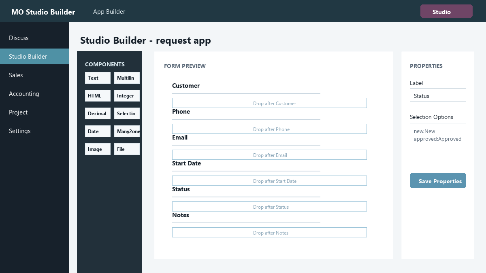
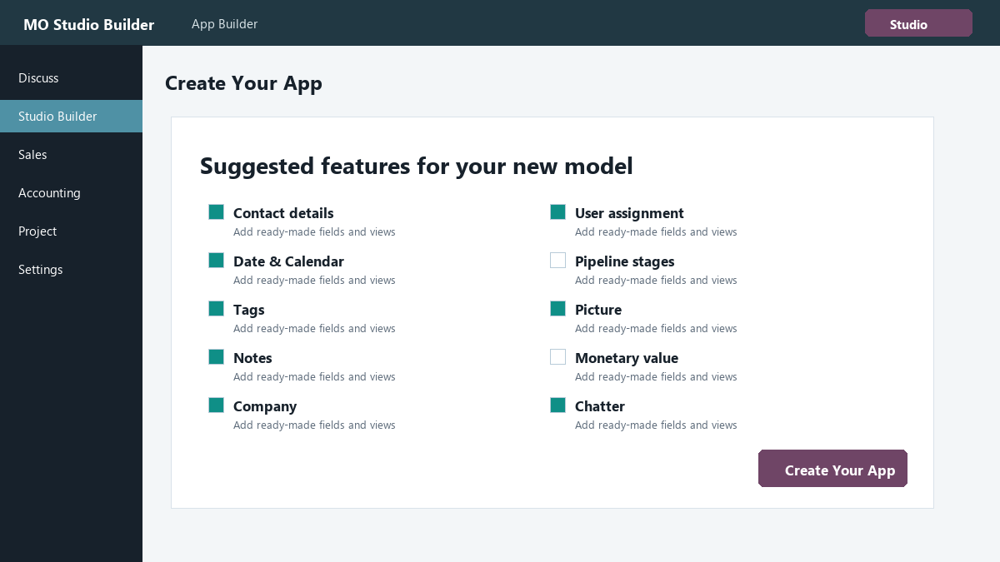
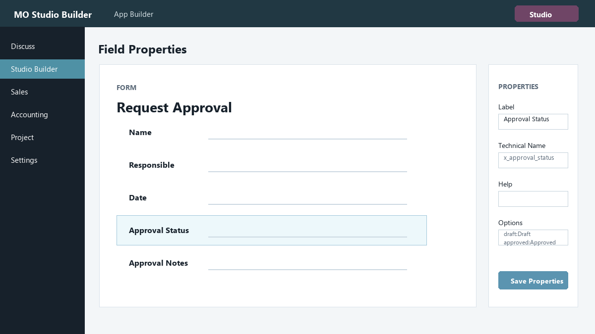

Studio entry point
Open the builder from the Odoo header while working inside a page.
Build custom Odoo applications, add fields, arrange form layouts, update list views, and open a Studio-like editor from any supported page.

MO Studio Builder gives administrators a productive studio workspace for creating business apps without writing Python or XML. Create a model, choose suggested features, add custom fields, preview the page, then apply the changes when the design is ready.
Open the builder from the Odoo header while working inside a page.
Add, select, and edit fields in a preview canvas before updating the real app.
Configure labels, technical names, help text, required, readonly, relations, and selection options.
Created apps appear as normal Odoo applications with their own menu and icon.
Jump to fields, views, access, reports, and automations from the builder toolbar.
Preview changes first, then apply them through the Update App command.


Built for Odoo 17 Community and Enterprise. Install it like a normal Odoo addon, update the Apps list, then open MO Studio Builder from the Odoo apps menu.